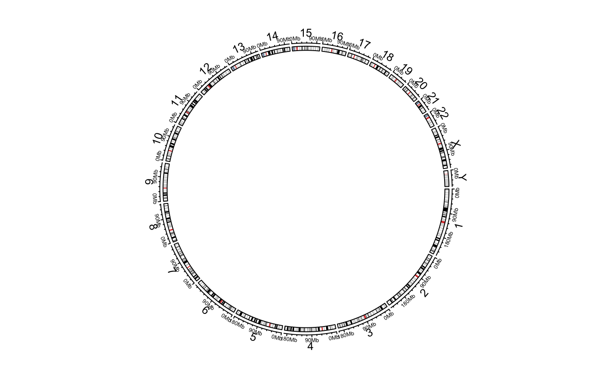
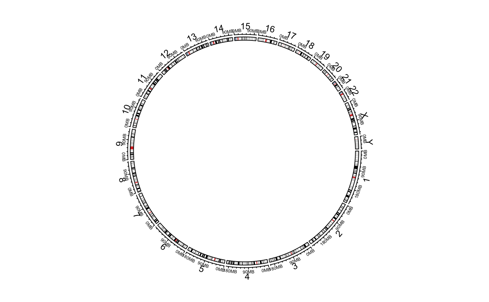
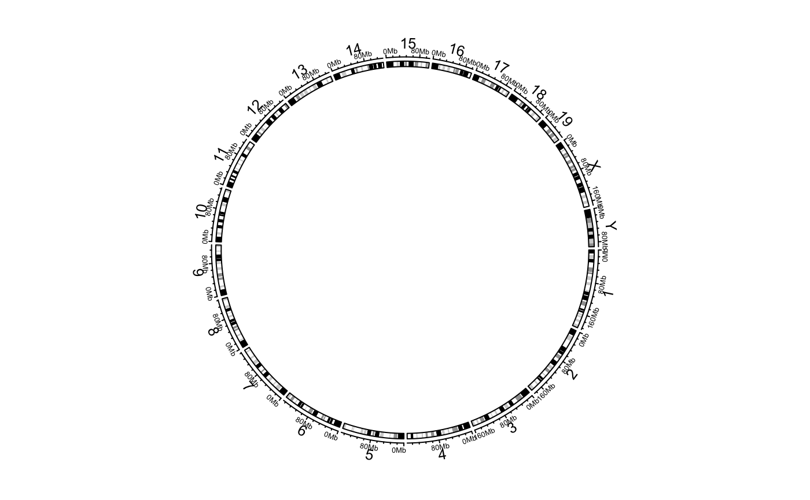
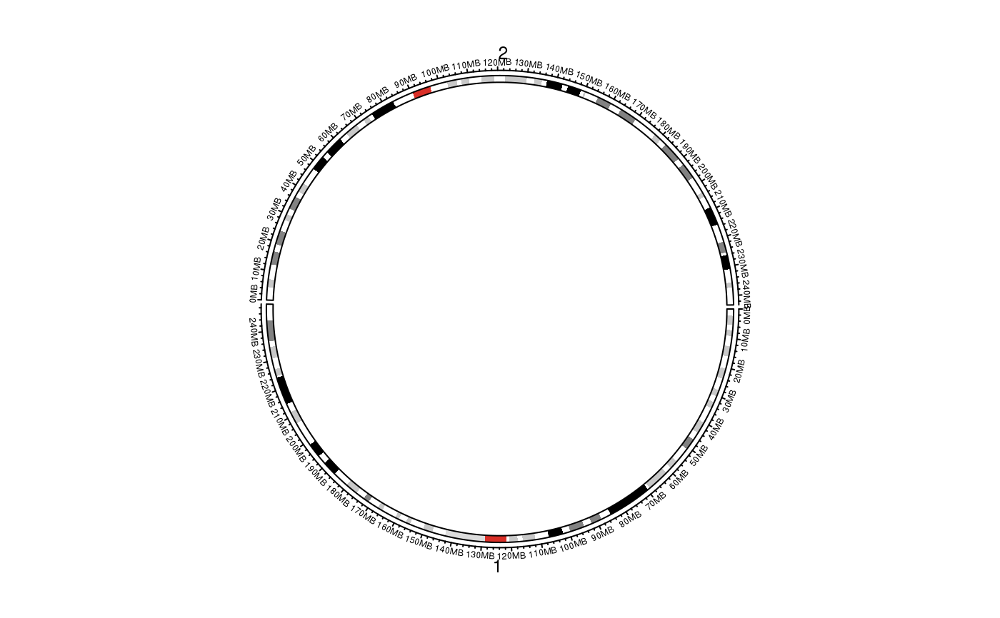
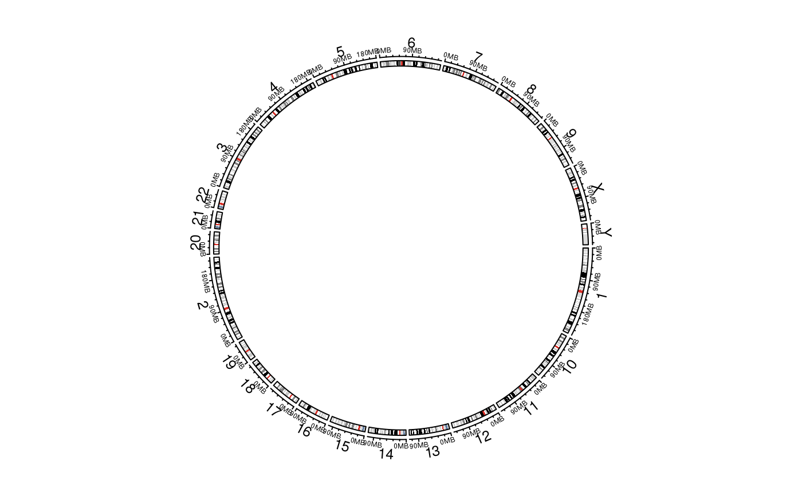
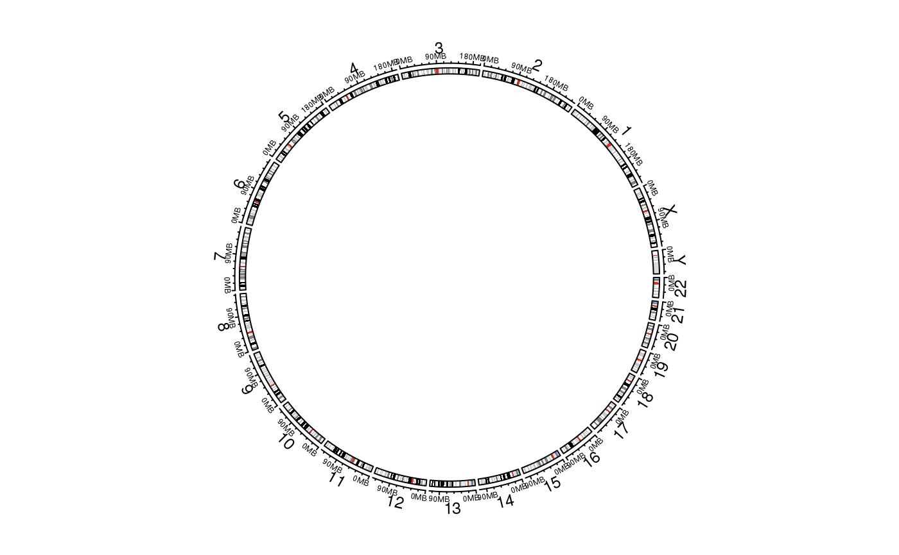
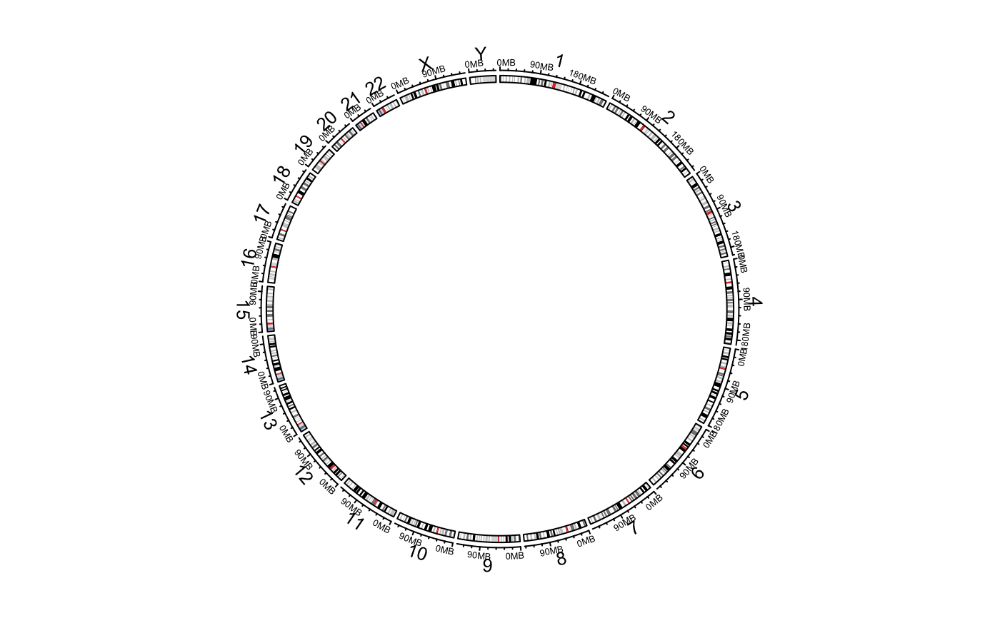
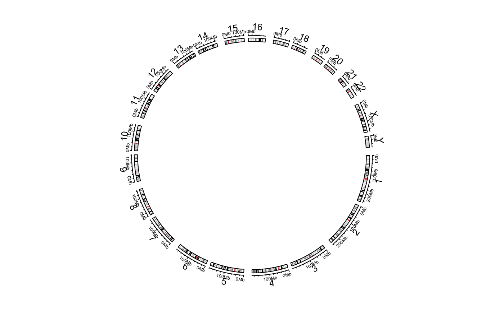

Initialize the circular layout with an ideogram
circos.initializeWithIdeogram.RdInitialize the circular layout with an ideogram
circos.initializeWithIdeogram( cytoband = system.file(package = "circlize", "extdata", "cytoBand.txt"), species = NULL, sort.chr = TRUE, chromosome.index = usable_chromosomes(species), major.by = NULL, plotType = c("ideogram", "axis", "labels"), track.height = NULL, ideogram.height = convert_height(2, "mm"), ...)
Arguments
| cytoband | A path of the cytoband file or a data frame that already contains cytoband data. By default it is cytoband for hg19.
Pass to |
|---|---|
| species | Abbreviations of species. e.g. hg19 for human, mm10 for mouse. If this
value is specified, the function will download cytoBand.txt.gz from
UCSC website automatically. If there is no cytoband for user's species,
it will keep on trying to download chromInfo file. Pass to |
| chromosome.index | subset of chromosomes, also used to reorder chromosomes. |
| sort.chr | Whether chromosome names should be sorted (first sort by numbers then by letters).
If |
| major.by | Increment of major ticks. Pass to |
| plotType | Which tracks should be drawn. |
| track.height | Height of the track which contains "axis" and "labels". |
| ideogram.height | Height of the ideogram track |
| ... | Pass to |
Details
The function will initialize the circular plot in which each sector corresponds to a chromosome. You can control the order of
chromosomes by chromosome.index or by sort.chr, or by setting a special format of cytoband (please refer to read.cytoband
to find out how to control a proper cytoband).
The function finally pass data to circos.genomicInitialize to initialize the circular plot.
The style of ideogram is almost fixed, but you can customize it with your self-sefined code. Refer to vignette for demonstration.
See also
Examples
# \donttest{ circos.initializeWithIdeogram()cytoband.file = system.file(package = "circlize", "extdata", "cytoBand.txt") circos.initializeWithIdeogram(cytoband.file)cytoband.df = read.table(cytoband.file, colClasses = c("character", "numeric", "numeric", "character", "character"), sep = "\t") circos.initializeWithIdeogram(cytoband.df) circos.initializeWithIdeogram(species = "hg18")circos.initializeWithIdeogram(species = "mm10")cytoband = read.table(cytoband.file, colClasses = c("character", "numeric", "numeric", "character", "character"), sep = "\t") circos.initializeWithIdeogram(cytoband, sort.chr = FALSE)cytoband[[1]] = factor(cytoband[[1]], levels = paste0("chr", c(22:1, "X", "Y"))) circos.initializeWithIdeogram(cytoband, sort.chr = FALSE)cytoband = read.table(cytoband.file, colClasses = c("character", "numeric", "numeric", "character", "character"), sep = "\t") circos.initializeWithIdeogram(cytoband, sort.chr = TRUE)circos.initializeWithIdeogram(plotType = NULL)#> Warning: 'start.degree' can only be modified before `circos.initialize`, or #> maybe you forgot to call `circos.clear` in your last plot.circos.initializeWithIdeogram()circos.clear() # }